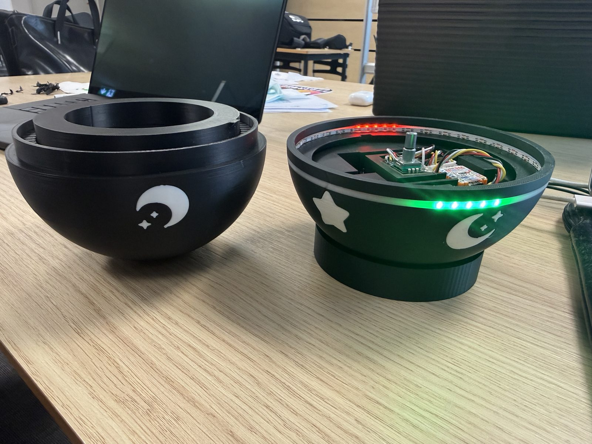
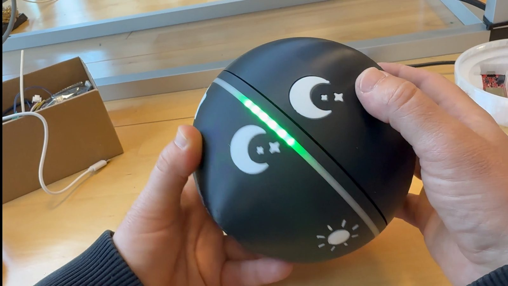
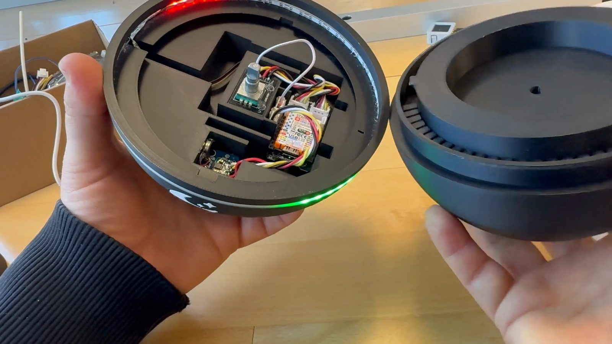
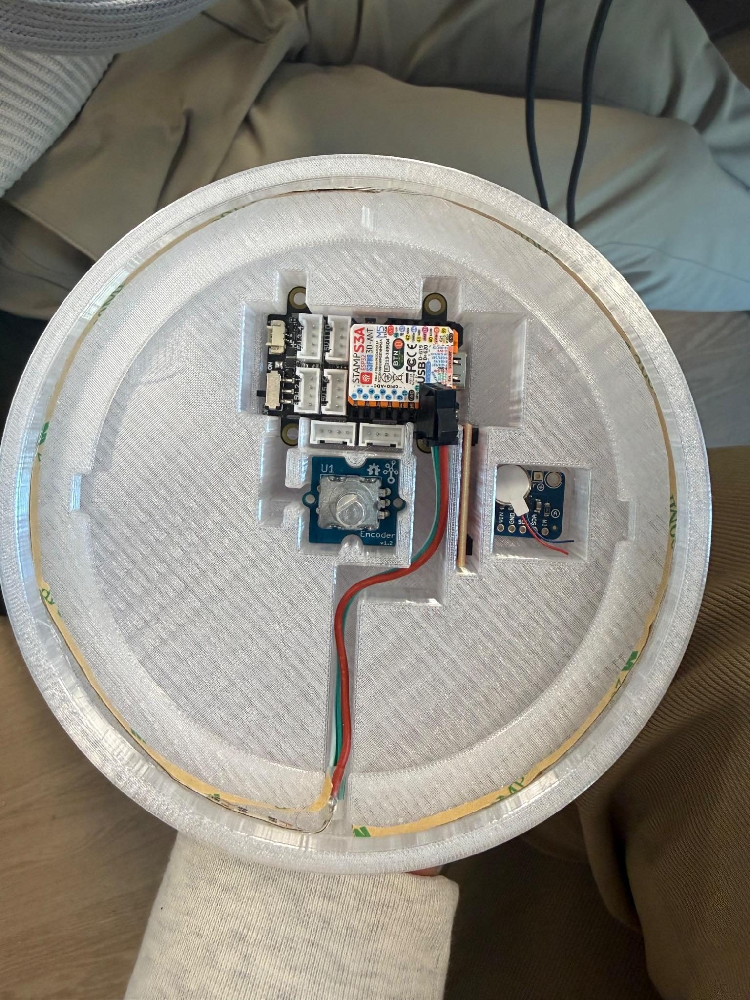
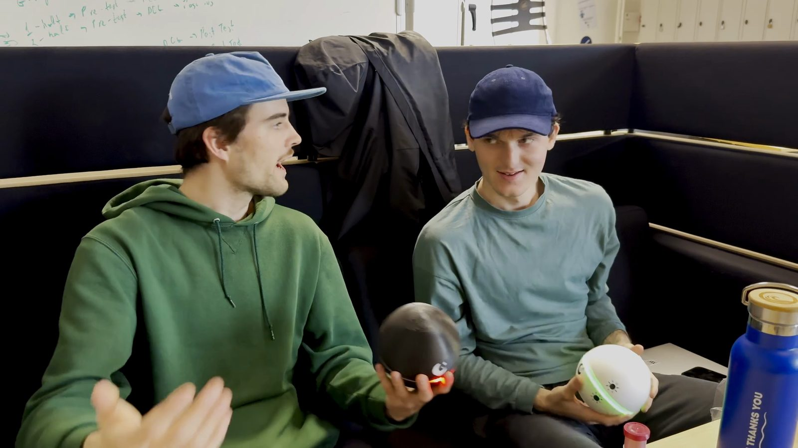
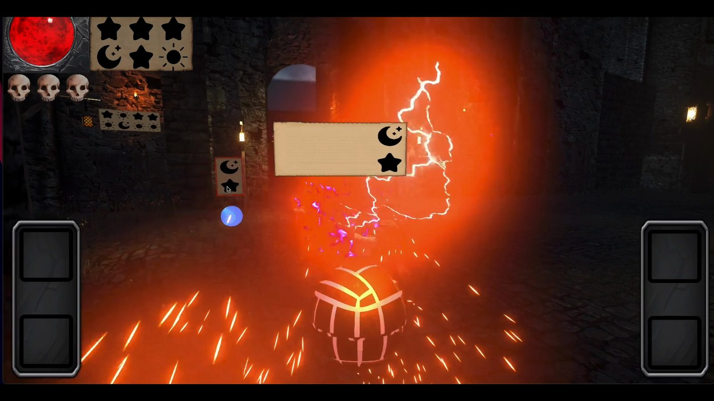
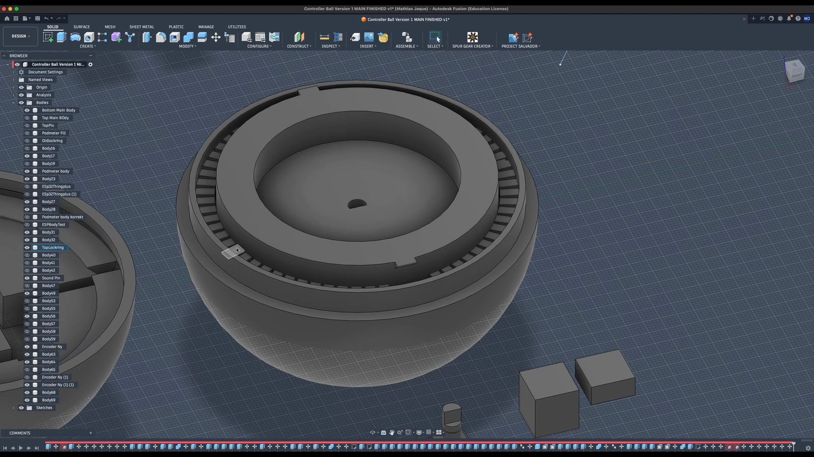
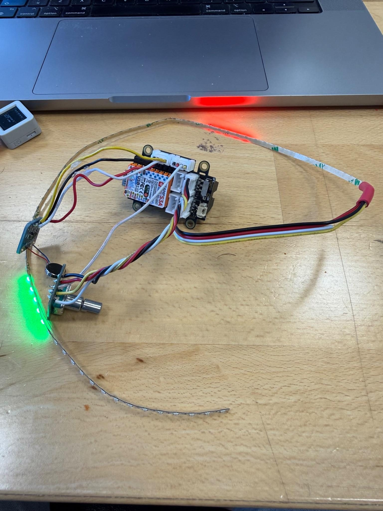
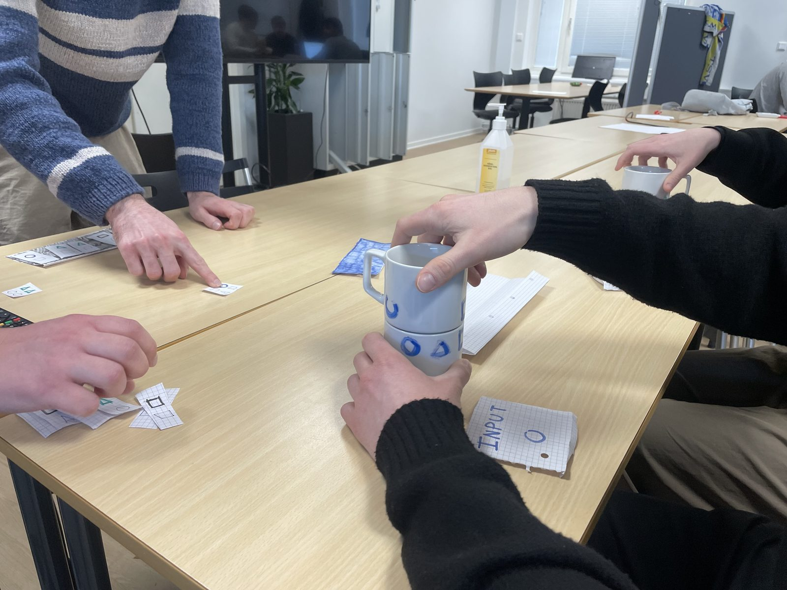

Bachelor thesis · 6th semester · 2026
O.R.B.S.Together Through the Medieval Hellscape
Two custom spherical controllers that force players to work together — and a co-op game built to test them.
About the project
Our bachelor thesis asked whether tangible user interfaces can promote collaboration in video games. We designed the O.R.B.S. (Orchestrated Relationship Building Spheres) — two twistable, 3D-printed spheres — together with SpellBound, a co-op game where spells only fire when both players align the right symbols and press their spheres together. In a between-subjects study (O.R.B.S. vs. Xbox gamepads) using questionnaires, video observation and a Prisoner's Dilemma task, the O.R.B.S. group generally showed more collaboration — more explicit coordination, closeness and bonding — though the sample was too small to confirm it statistically.
What I did
- Designed and assembled the hardware for both sphere controllers — everything inside the shells.
- Electronics: M5Stack Stamp S3 (ESP32), a rotary encoder for 360° twist and press, a haptic motor and an LED ring that glows green or red when symbols line up.
- Solved power and space problems — moved from a SparkFun Thing Plus to the smaller Stamp S3 and from 3.7 V to a boosted 5 V supply.
- Wireless link: the spheres send input over ESP-NOW to a receiver ESP that feeds Unity over USB serial.
- Ran the comparative playtests together with the group.
What I learned
- Hardware lives or dies on power and space — the spheres only worked once I rethought them around a smaller board and a boosted 5 V supply.
- Test the whole system, not just the new part. We usability-tested the controllers but not the game logic, so a button-mashing shortcut only surfaced in the final study.
- Study design decides what you can claim: with 11 participants the trend was clear but not conclusive. Screening participants and filming hands and screen separately would have made the data stronger.
- Custom hardware has to earn its place — a small effect raises the fair question of whether a custom game alone could do the job.








